4. КРАТКОЕ ОПИСАНИЕ МОДЕЛЕЙ АД
Моделирование АД выполнено по каталожным данным (Р2н, п2н, Sн, U1н = 220/380 B (∆/Y), f1 = 50 Гц, α = I1n/I1н, β = Mn/Mн, λ = Mmax/Mн, КПД ηн, cosφн) для мощностей 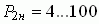 кВт с использованием Г-образной схемы замещения АД для скольжений S = 1…Sкр с параметрами:
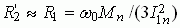; 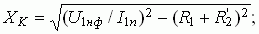
I1 = U1ф/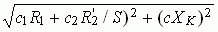;
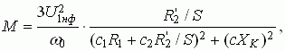
и Т-образной схемы замещения для скольжений S = 0…Sкр с параметрами:
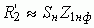 или 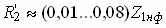 (обычно 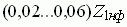, при этом меньшие значения относятся к крупным машинам, большие – к машинам малой мощности), где 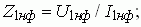 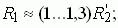
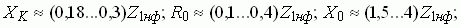
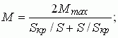 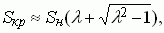
где S - текущее скольжение, вычисляемое (посредством численного метода Эйлера) из уравнения динамики АД:
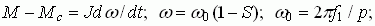 М – вращающий момент АД; Мс - момент сопротивления на валу АД, принятый независимым от угловой скорости ω и от времени t; J – суммарный момент инерции в кг/м2, пересчитанный к валу двигателя; с1, с2 и с - коэффициенты согласования двух схем замещения АД.
Пример моделирования работы АД с КЗ-ротором типа 4А160S2У3 при изменении момента сопротивления на валу представлен на рис. 19.7.

Графики n2(t), M(t), I1(t) и M(S) могут быть записаны в файл (после щелчка правой клавишью мыши на графике высвечивается окно "Копировать в буфер") и распечатаны на принтере.